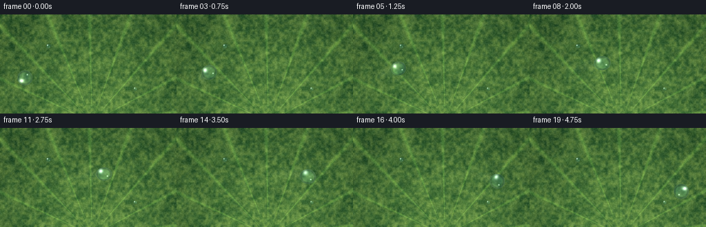
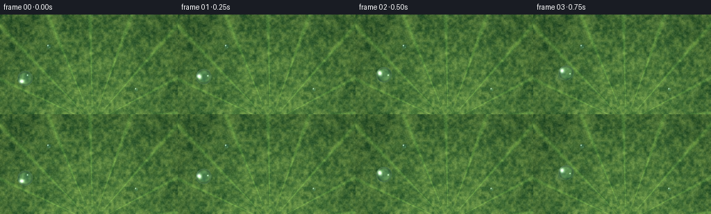

CODING AGENTS AS PIXEL WORLD MODELS
traex/Seed-2.1-Pro-0915 · phygen_036
点击播放 · 原生 RGB 像素
逐轮保存的候选
回放视频、检查图与代码变化。
每份候选均可单独播放。实际图片检查记录在下方工具轨迹中。
候选 01播放与检查图
点击播放 · 原生 RGB 像素


展开代码变化
--- 上一保存版本
+++ 本次保存版本
@@ -0,0 +1,199 @@
+"""Procedural text-to-video: a glistening dewdrop sliding across a lotus leaf.
+
+Pure numpy/PIL rendering at 2x supersampling, then downscaled to 256x144.
+Run: python generate.py
+"""
+import numpy as np
+from PIL import Image
+
+import artifact_io
+
+W, H, N, FPS = 256, 144, 20, 4.0
+S = 2 # supersampling factor
+WS, HS = W * S, H * S
+rng = np.random.default_rng(42)
+
+
+def smoothstep(e0, e1, x):
+ t = np.clip((x - e0) / (e1 - e0), 0.0, 1.0)
+ return t * t * (3 - 2 * t)
+
+
+def noise_field(cols, rows):
+ """Smooth value noise resized up to full supersampled resolution."""
+ low = rng.random((rows, cols)).astype(np.float32)
+ img = Image.fromarray((low * 255).astype(np.uint8)).resize((WS, HS), Image.BILINEAR)
+ return np.asarray(img, dtype=np.float32) / 255.0
+
+
+def build_leaf():
+ ys, xs = np.mgrid[0:HS, 0:WS].astype(np.float32)
+ xn, yn = xs / WS, ys / HS
+
+ # Layered value noise gives mottled, waxy lotus-leaf texture.
+ n_big = noise_field(24, 14)
+ n_mid = noise_field(72, 40)
+ n_fine = noise_field(220, 124)
+ field = 0.55 * n_big + 0.3 * n_mid + 0.15 * n_fine
+
+ # Leaf center sits just below the frame; veins fan across the surface.
+ cx, cy = WS * 0.52, HS * 1.08
+ dx, dy = xs - cx, ys - cy
+ dist = np.sqrt(dx * dx + dy * dy)
+ angle = np.arctan2(dy, dx)
+ rho = dist / (HS * 1.25)
+
+ dark = np.array([30, 82, 42], dtype=np.float32)
+ light = np.array([126, 165, 78], dtype=np.float32)
+ mix = np.clip(0.35 * field + 0.55 * n_mid + 0.18 * (1.0 - rho), 0, 1)
+ leaf = dark[None, None, :] * (1 - mix[..., None]) + light[None, None, :] * mix[..., None]
+
+ # Gentle dome shading: the leaf curves away toward the edges.
+ dome = 1.0 - 0.22 * np.clip(rho, 0, 1) ** 1.6
+ leaf *= dome[..., None]
+
+ # Radial veins (lighter ridges) with a faint dark flank.
+ n_veins = 17
+ vein_angles = np.linspace(-np.pi, np.pi, n_veins, endpoint=False) + 0.07
+ da = np.abs(np.arctan2(np.sin(angle[:, :, None] - vein_angles),
+ np.cos(angle[:, :, None] - vein_angles)))
+ width = 0.010 + 0.012 * np.clip(dist / (HS * 0.9), 0, 1)
+ vein = np.exp(-(da / width[..., None]) ** 2).max(axis=2)
+ vein *= smoothstep(0.02, 0.12, dist / HS)
+ leaf += vein[..., None] * np.array([26, 34, 12])
+ flank = np.exp(-((da - width[..., None] * 1.7) / (width[..., None] * 0.8)) ** 2).max(axis=2)
+ leaf -= (flank * vein)[..., None] * np.array([10, 14, 6])
+
+ # Faint concentric cross-veins.
+ ring_phase = (dist / (HS * 0.11)) % 1.0
+ ring = np.exp(-((ring_phase - 0.5) / 0.09) ** 2) * 0.35
+ leaf += ring[..., None] * np.array([10, 14, 6])
+
+ # Waxy papillae speckle and soft mottling.
+ speck = (n_fine - 0.5) * 22.0
+ leaf += speck[..., None]
+ leaf += (n_big - 0.5)[..., None] * np.array([6, 10, 4])
+
+ return np.clip(leaf, 0, 255)
+
+
+LEAF = build_leaf()
+
+
+def path_at(t):
+ """Droplet center (final-resolution coords) and motion angle at parameter t."""
+ e = 0.5 - 0.5 * np.cos(np.pi * t) # smooth ease in/out
+ x = 36 + 184 * e
+ y = 92 - 24 * np.sin(np.pi * t) + 4 * np.sin(2 * np.pi * t)
+ e2 = 0.5 - 0.5 * np.cos(np.pi * min(1.0, t + 1e-3))
+ e1 = 0.5 - 0.5 * np.cos(np.pi * max(0.0, t - 1e-3))
+ vx = 184 * (e2 - e1) / (2e-3)
+ vy = -24 * np.pi * np.cos(np.pi * t) + 8 * np.pi * np.cos(2 * np.pi * t)
+ return x, y, np.arctan2(vy, vx)
+
+
+def blend(base, layer, alpha):
+ a = alpha[..., None]
+ return base * (1 - a) + layer * a
+
+
+def draw_droplet(canvas, fx, fy, radius, theta, t, alpha_scale=1.0):
+ """Composite a refractive water droplet with shadow and glints."""
+ cx, cy, R = fx * S, fy * S, radius * S
+ r_pad = int(R * 2.4) + 3
+ x0, x1 = max(0, int(cx) - r_pad), min(WS, int(cx) + r_pad + 1)
+ y0, y1 = max(0, int(cy) - r_pad), min(HS, int(cy) + r_pad + 1)
+ if x1 <= x0 or y1 <= y0:
+ return
+ ys, xs = np.mgrid[y0:y1, x0:x1].astype(np.float32)
+ lx, ly = xs - cx, ys - cy
+ ct, st = np.cos(theta), np.sin(theta)
+ # Squash/stretch along the direction of travel.
+ stretch = 1.0 + 0.10 * np.sin(np.pi * min(max(t, 0.0), 1.0)) ** 2
+ ax, ay = R * stretch, R / stretch
+ u = (ct * lx + st * ly) / ax
+ v = (-st * lx + ct * ly) / ay
+ r = np.sqrt(u * u + v * v)
+ inside = r < 1.0
+ if not inside.any():
+ return
+
+ # Soft contact shadow.
+ sh_y, sh_x = ly + R * 0.28, lx + R * 0.22
+ sh = np.exp(-((sh_x / (R * 1.25)) ** 2 + (sh_y / (R * 0.85)) ** 2)) * 0.30
+ sh *= smoothstep(1.0, 0.55, r) # keep shadow off the body
+ canvas[y0:y1, x0:x1] = blend(canvas[y0:y1, x0:x1],
+ np.array([8, 26, 14]), sh * alpha_scale)
+
+ # Refracted leaf: magnify the background toward the drop center.
+ sx = np.clip((cx + lx * 0.55).astype(int), 0, WS - 1)
+ sy = np.clip((cy + ly * 0.55).astype(int), 0, HS - 1)
+ body = LEAF[sy, sx].copy()
+ body = body * np.array([0.92, 1.02, 1.06]) + np.array([8, 10, 14])
+
+ # Top-lit gradient and Fresnel-style dark rim.
+ top_light = np.clip(0.5 - 0.55 * v, 0, 1)[..., None]
+ body += top_light * np.array([16, 20, 14])
+ fres = smoothstep(0.45, 1.0, r)
+ body *= (1 - 0.42 * fres[..., None] ** 2)
+ rim = smoothstep(0.82, 0.97, r) * (1 - smoothstep(0.97, 1.02, r))
+ body += rim[..., None] * np.array([26, 40, 34])
+ # Bright lower crescent from light bouncing through the water.
+ cres = np.exp(-(((u - 0.15) / 0.75) ** 2 + ((v - 0.62) / 0.20) ** 2))
+ body += (cres * smoothstep(0.3, 0.95, r))[..., None] * np.array([18, 26, 16])
+
+ # Glistening specular highlight with a subtle living flicker, plus a glint.
+ flick = 0.88 + 0.12 * np.sin(2 * np.pi * (2.2 * t) + 0.6)
+ spec = np.exp(-(((u + 0.38) / 0.24) ** 2 + ((v + 0.44) / 0.30) ** 2)) * flick
+ glint = np.exp(-(((u - 0.42) / 0.085) ** 2 + ((v - 0.30) / 0.085) ** 2))
+ body += (spec * 205 + glint * 150)[..., None]
+
+ alpha = smoothstep(1.0, 0.92, r) * alpha_scale
+ region = canvas[y0:y1, x0:x1]
+ canvas[y0:y1, x0:x1] = np.where(inside[..., None],
+ blend(region, np.clip(body, 0, 255), alpha), region)
+
+
+def render_frame(i):
+ t = i / (N - 1)
+ frame = LEAF.copy()
+
+ # Fading wet trail behind the droplet.
+ for k in range(1, 16):
+ tt = max(0.0, t - k * 0.018)
+ tx, ty, _ = path_at(tt)
+ age = k / 15
+ r_tr = 10.5 * (1 - 0.45 * age)
+ r_pad = int(r_tr * S) + 2
+ ccx, ccy = tx * S, ty * S
+ x0, x1 = max(0, int(ccx) - r_pad), min(WS, int(ccx) + r_pad + 1)
+ y0, y1 = max(0, int(ccy) - r_pad), min(HS, int(ccy) + r_pad + 1)
+ if x1 <= x0 or y1 <= y0:
+ continue
+ ys, xs = np.mgrid[y0:y1, x0:x1].astype(np.float32)
+ d = np.sqrt((xs - ccx) ** 2 + (ys - ccy) ** 2) / (r_tr * S)
+ a = np.exp(-d ** 2 * 2.2) * 0.10 * (1 - age)
+ region = frame[y0:y1, x0:x1]
+ frame[y0:y1, x0:x1] = blend(region, np.minimum(region + 46, 255), a)
+
+ # Two small resting dewdrops for scale and context.
+ for sxp, syp, sr in [(70, 46, 3.4), (196, 108, 2.7)]:
+ draw_droplet(frame, sxp, syp, sr, 0.0, t, alpha_scale=0.95)
+
+ # The traveling dewdrop.
+ x, y, theta = path_at(t)
+ wobble = 1.0 + 0.03 * np.sin(2 * np.pi * 3 * t)
+ draw_droplet(frame, x, y, 11.2 * wobble, theta, t)
+
+ img = Image.fromarray(np.clip(frame, 0, 255).astype(np.uint8))
+ return np.asarray(img.resize((W, H), Image.LANCZOS), dtype=np.uint8)
+
+
+def main():
+ frames = np.stack([render_frame(i) for i in range(N)], axis=0)
+ artifact_io.save(frames, ".")
+ print(f"Saved {frames.shape} frames; mean RGB {frames.mean(axis=(0,1,2)).round(1)}")
+
+
+if __name__ == "__main__":
+ main()
可观测工具轨迹
实际执行的命令与返回图片。
命令 1exit 0
/bin/bash -lc 'cat prompt.txt GENERATION_RULES.md task_spec.json; ls -la'
命令 2exit 0
/bin/bash -lc 'cat artifact_io.py'
命令 3exit 0
/bin/bash -lc 'cd . && python generate.py && ls -la frames | head -6 && ls -la'
命令 4exit 0
/bin/bash -lc "cd . && python - <<'EOF'
import numpy as np
from PIL import Image
import generate as g
frames = np.stack([np.asarray(Image.open(f\"frames/{i:02d}.png\")) for i in range(20)])
print(\"shape\", frames.shape, \"range\", frames.min(), frames.max())
# locate brightest highlight cluster (drop specular) per frame
for i in range(20):
f = frames[i].astype(int)
lum = f.sum(2)
ys, xs = np.where(lum > np.percentile(lum, 99.7))
px, py, th = g.path_at(i/19)
print(f\"f{i:02d} path=({px:5.1f},{py:5.1f}) bright_centroid=({xs.mean():5.1f},{ys.mean():5.1f}) n={len(xs)}\")
# inter-frame differences confirm temporal change
d = np.abs(frames[1:].astype(int) - frames[:-1].astype(int)).mean(axis=(1,2,3))
print(\"mean per-frame delta:\", d.round(2))
print(\"unique colors per frame (min):\", min(len(np.unique(f.reshape(-1,3), axis=0)) for f in frames))
EOF"命令 5exit 0
/bin/bash -lc "cd . && python - <<'EOF'
import numpy as np
from PIL import Image
import generate as g
# static leaf background at final resolution
base = np.asarray(Image.fromarray(g.LEAF.astype(np.uint8)).resize((256,144), Image.LANCZOS)).astype(int)
for i in range(0, 20, 4):
f = np.asarray(Image.open(f\"frames/{i:02d}.png\")).astype(int)
d = np.abs(f - base).sum(2)
ys, xs = np.where(d > 60)
px, py, th = g.path_at(i/19)
if len(xs):
# largest cluster near path
near = np.hypot(xs-px, ys-py) < 20
print(f\"f{i:02d} path=({px:6.1f},{py:5.1f}) drop-region centroid=({xs[near].mean():6.1f},{ys[near].mean():5.1f}) angle={np.degrees(th):6.1f}\")
# verify final artifacts
import os
for name in [\"pixels.npz\",\"index.html\",\"inspection.png\",\"transition_check.png\"]:
print(name, os.path.getsize(name))
data = np.load(\"pixels.npz\")
p = data[\"pixels\"]
print(\"pixels tensor:\", p.shape, p.dtype)
rgb = np.stack([(p>>16)&255,(p>>8)&255,p&255],-1)
print(\"decoded shape:\", rgb.shape, \"matches frames:\", np.array_equal(rgb, np.stack([np.asarray(Image.open(f'frames/{i:02d}.png')) for i in range(20)])))
EOF"命令 6exit 1
/bin/bash -lc "cd . && python - <<'EOF'
import numpy as np
from PIL import Image
data = np.load(\"pixels.npz\")
p = data[\"pixels\"]
rgb = np.stack([(p>>16)&255,(p>>8)&255,p&255],-1).astype(np.uint8)
fr = np.stack([np.asarray(Image.open(f'frames/{i:02d}.png')) for i in range(20)])
print(rgb.shape, fr.shape, rgb.dtype, fr.dtype)
diff = np.abs(rgb.astype(int)-fr.astype(int))
print(\"max diff:\", diff.max(), \"n diff px:\", (diff.sum(-1)>0).sum())
# check exact equality on frame 0
print(\"frame0 equal:\", np.array_equal(rgb[0], fr[0]))
EOF"命令 7exit 0
/bin/bash -lc "cd . && python - <<'EOF'
import numpy as np
from PIL import Image
p = np.load(\"pixels.npz\")[\"pixels\"]
rgb = np.stack([(p>>16)&255,(p>>8)&255,p&255],-1).astype(np.uint8).transpose(2,0,1,3)
fr = np.stack([np.asarray(Image.open(f'frames/{i:02d}.png')) for i in range(20)])
print(\"npz matches frames exactly:\", np.array_equal(rgb, fr), \"| shape:\", rgb.shape)
EOF
ls frames | wc -l"保存候选 1 份；完成命令 7 次；可验证图片返回 0 张。原始 API 响应与完整日志保留在本地。